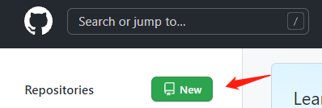
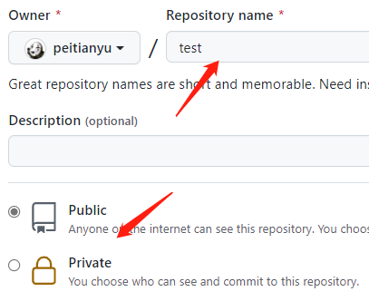

vscode_github
参考网址:
【VScode与GitHub】10分钟学会用Git管理自己的代码_哔哩哔哩_bilibili
安装vscode
超详细VSCode安装教程（Windows）_Zhangguohao666的博客-CSDN博客_vscode安装教程
安装git与使用教程
不过此处不讲关于git的使用,只是利用vscode对于github进行的具体操作.
最基本git操作
新建github库
New一个名为test,并且public的一个库,点击Create Repository


复制ssh: git@github.com:peitianyu/test.git,待会需要使用
cd test
# 初始化库
git init
# 连接github
git remote add origin git@github.com:peitianyu/pty_blog.github.io.git
# 添加所有文件
git add -A
# 添加备注
git commit -m “first commit”
# 推到github
git push -u origin master
最后修改于 2021-10-17